| Version 6.0.3 |
The current integration of QF-Test and HP ALM - Quality Center utilizes the built-in VAPI-XP-TEST type of Quality Center.
|
| 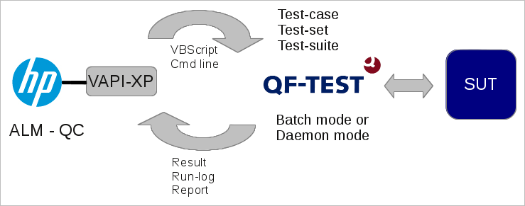 | ||
|
| Figure 25.1: Integration with ALM - QualityCenter | ||
The VAPI-XP-TEST type is intended to be an
automated test-case for any test-tool. QF-Test comes with a template file for
the VAPI-XP-TEST script, which is qcVapiXPTemplate.txt, see
qftest-6.0.3/ext/qualitycenter. This script can be
used as template for all QF-Test tests in Quality Center. Please see subsection 25.1.2 for a detailed step-by-step description.
The QF-Test VAPI-XP-TEST template script employs an external worker VBScript
script, called qcTemplate.vbs. This script is also part of the
QF-Test distribution (see
qftest-6.0.3/ext/qualitycenter) and has to be adapted
to your specific needs. So we encourage you to copy that file to a project
specific location and adapt it according to your needs.
The worker script launches QF-Test in batch mode on each test system locally, i.e. it has to be accessible for each test system. As the test suite files and the configuration files have to be available on the test system too, we recommend to put all those files on a shared network drive or into the version management system.
After the execution of the test the run-log of QF-Test will be appended to the test instance as well as the status of the test will be set to the result.
You can also change the worker script to make use of a daemon call (for details about the daemon mode, please see chapter 51). In this case QF-Test will establish the network connection to the test system and launch the test by itself. In case of the normal batch call Quality Center establishes the connection to the test-system and triggers the local QF-Test installation to perform the test. If you make use of the daemon call, the worker script has to be located on the Quality Center system, but the test suite still needs to be accessible on each test system.
If you do not make use of VBScript in your project, feel free to port the QF-Test demo scripts to JScript or any other supported language.
The following figure shows the VAPI-XP-TEST test-case in Quality Center:
|
| 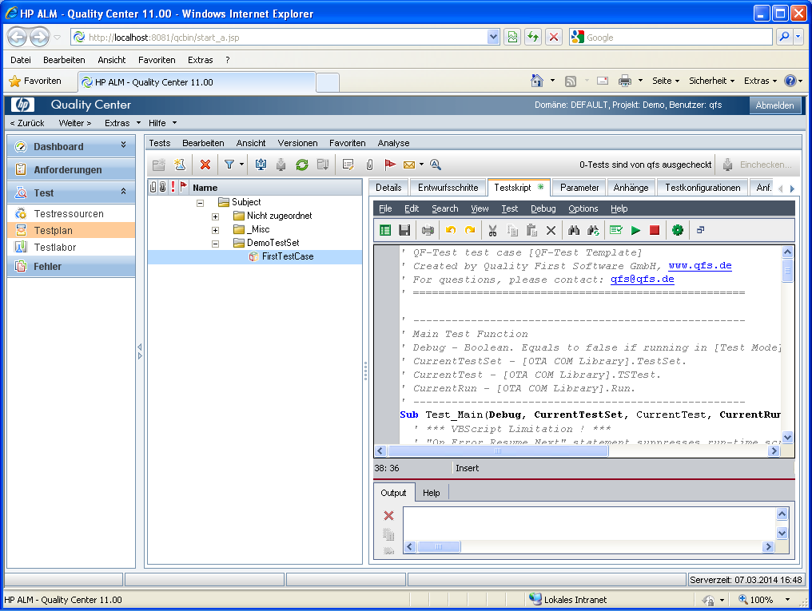 | ||
|
| Figure 25.2: QF-Test VAPI-XP-TEST test-case in HP ALM - QualityCenter | ||
General steps to be performed on the the test system:
qftest-6.0.3/ext/qualitycenter/qcTemplate.vbs to
your project location and rename it to a proper name. We recommend to use
the same path on all test-systems. Perhaps you should use a shared
network drive.
Steps in Quality Center to create a test-case:
You might want to create a new test-set e.g. called "DemoTestSet" in the "Test plan" area.
|
| 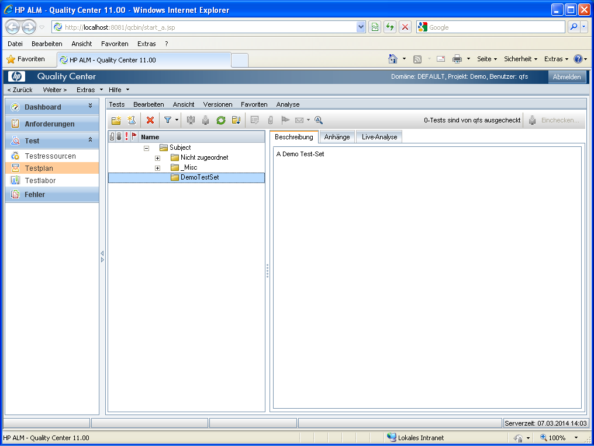 | ||
|
| Figure 25.3: In Test plan create new Test-set | ||
In this test-set create a new test with type VAPI-XP-TEST.
|
| 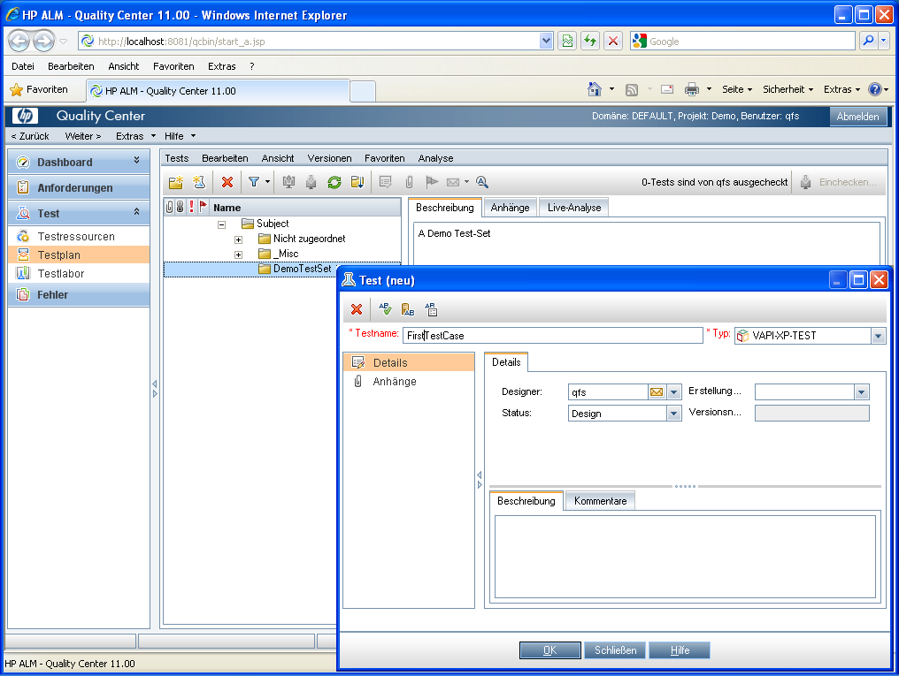 | ||
|
| Figure 25.4: Create new test of type VAPI-XP-TEST | ||
NoteOn the HP VAPI-XP Wizard window just press finish without any modifications. (That means you have VBScript as script language and COM/DCOM Server Test as test type).
|
| 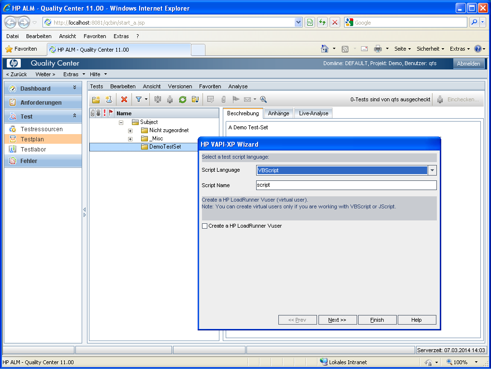 | ||
|
| Figure 25.5: HP VAPI-XP Wizard | ||
You will then get a new test as shown below.
|
| 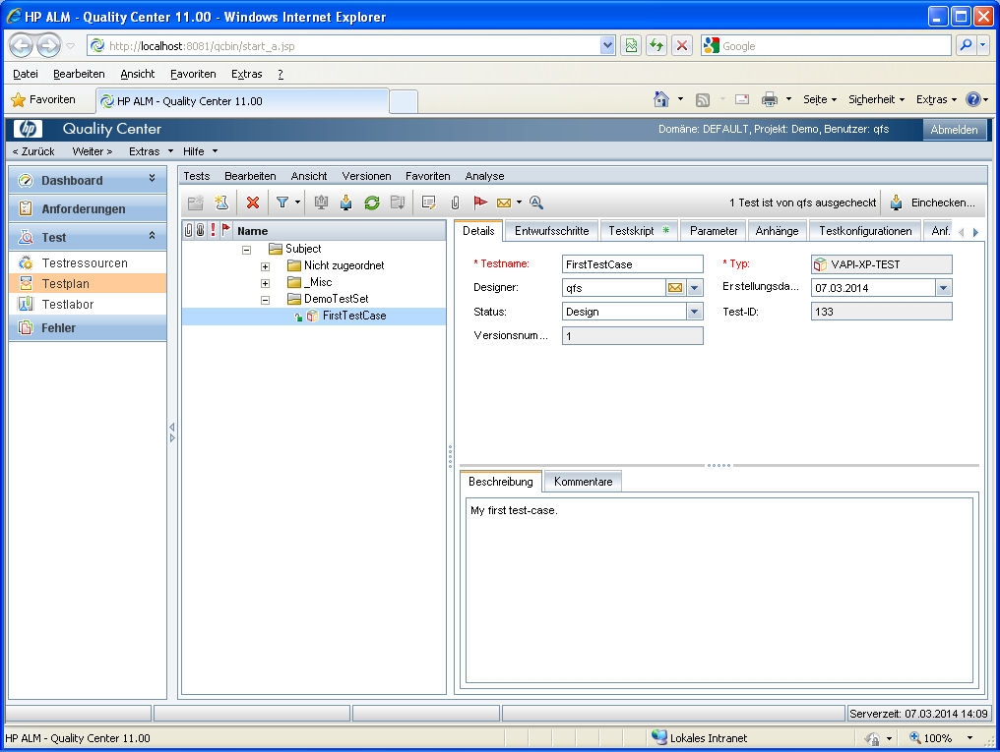 | ||
|
| Figure 25.6: Test details | ||
Change to the 'Test script' tab of the test and copy the content of the template file
qftest-6.0.3/ext/qualitycenter/qcVapiXPTemplate.txt
into the Script Viewer's text area.
|
| 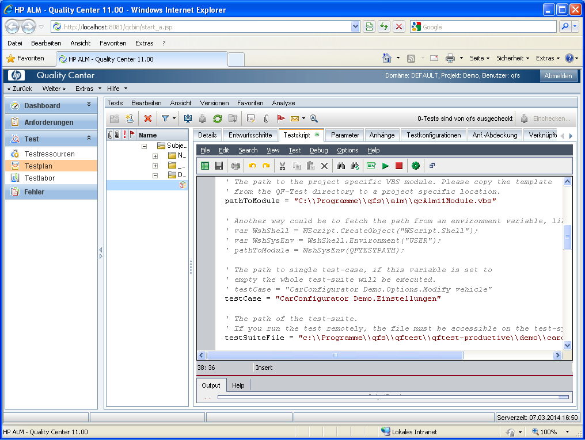 | ||
|
| Figure 25.7: Copy template content to script text area | ||
pathToModule variable to the
location you have copied the worker script qcTemplate.vbs to.
testSuiteFile variable to your desired test-suite file.
testCase variable to the desired test-case name.
Please read the comments in the script carefully, because you can also use test-case specific settings optionally.
Steps to be performed to run the sample test-case
You might want to create a new sample test-set.
|
| 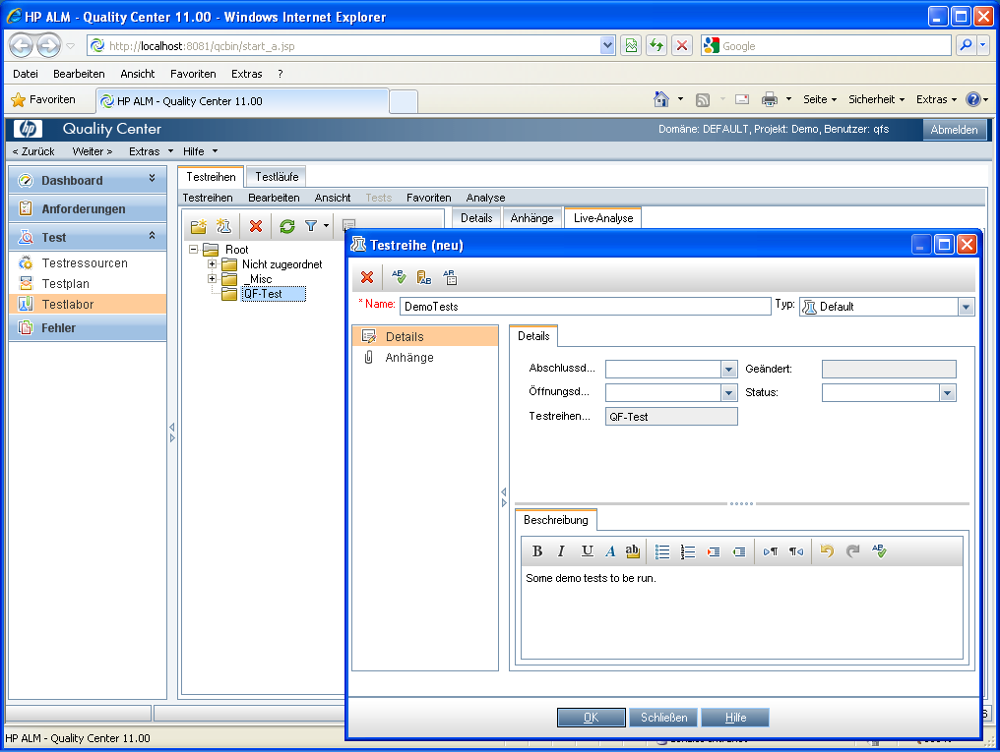 | ||
|
| Figure 25.8: New test-set in Test lab section | ||
|
| 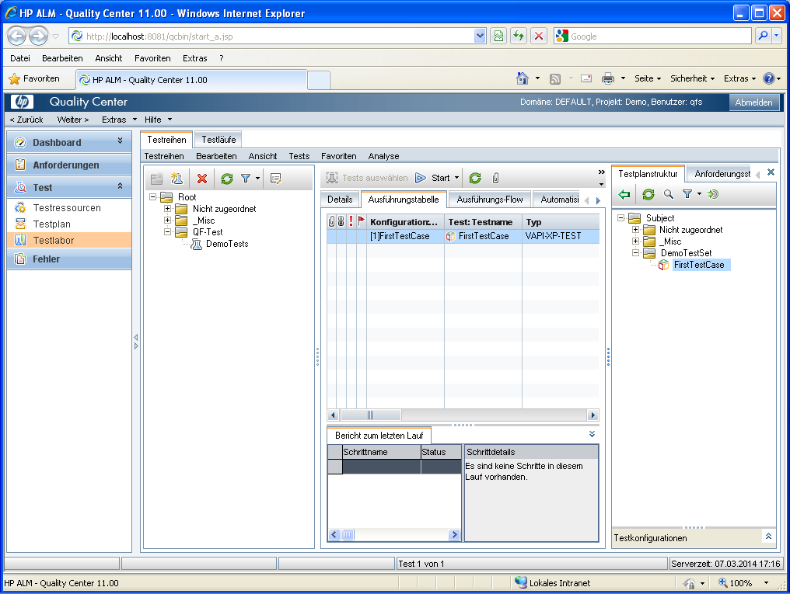 | ||
|
| Figure 25.9: Add test to execution grid | ||
Now you can launch the test-case. Ensure the "Run all tests locally" checkbox is activated unless you really have a remote system with a QF-Test environment already set up.
|
| 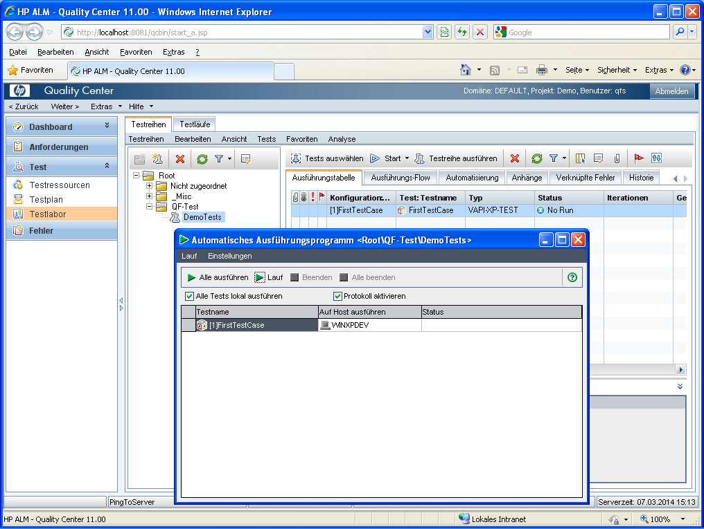 | ||
|
| Figure 25.10: Run the test | ||
Now Quality Center should start the test run - possibly on your machine, then you should see the SUT coming up after some time, actions being performed and closed at the end. When the run has finished, the result is noted down with the test: Passed or Failed.
|
| |||
|
| Figure 25.11: Test result | ||
To view the run-log, please double-click to the test in the execution grid, then change to "Runs" and again double-click at the paper-clip attachments symbol for the respective test-run.
|
| 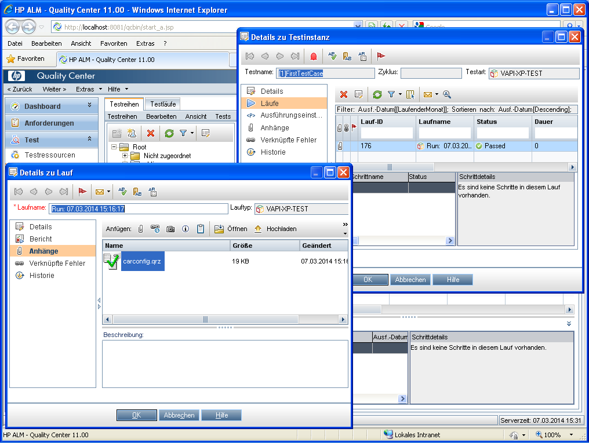 | ||
|
| Figure 25.12: Uploaded run-log | ||
First of all we need to state that we are not QualityCenter experts. Therefore there might be better and advance options for troubleshooting. Hence we want to at least provide some hints we used so far.
Unfortunately the process output during the test execution in QualityCenter is only visible for a fraction of time, not allowing a direct analysis. Therefore we need to find a work around.
The text editor of the VAPI-XP-TEST node in the "Test plan" area allows to directly execute the script. Then in the output area below the output gets visible permanently showing possibly something helpful.
|
| 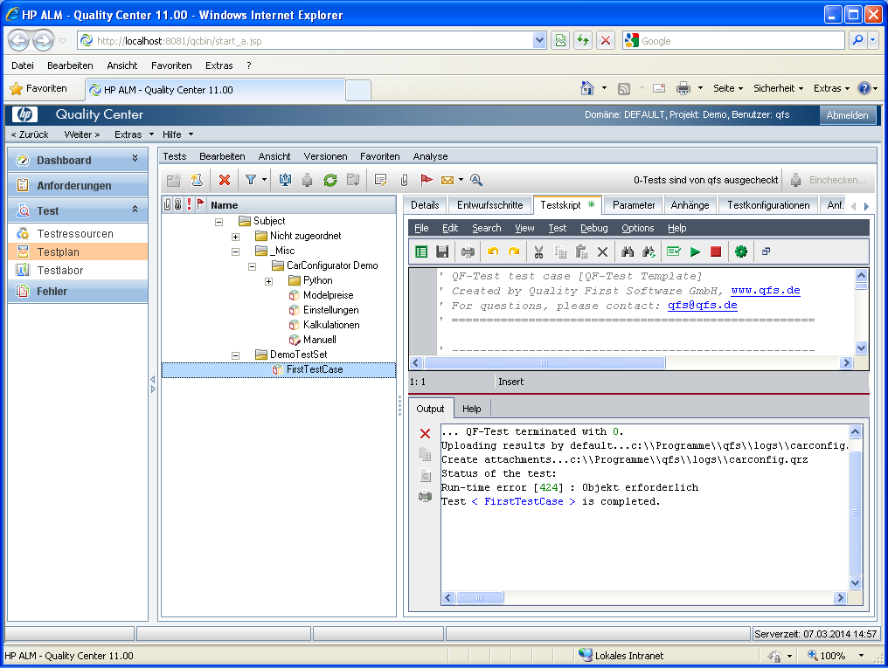 | ||
|
| Figure 25.13: Script debug run | ||
But the direct execution from the script node needs to be handled with care. Of course it is not considered as a real test run, so no run-log can be uploaded which results in a respective Run-time error "Object required" in the output. Don't get confused by that!
For more debugging, additional statements like TDOutput.Print "Some text" can be
added to both the test script and the worker script. By this you can see how far the script runs
until a possible error occurs.
The text script editor has a "Syntax check" button which is helpful for validation after every change.
| Last update: 9/6/2022 Copyright © 1999-2022 Quality First Software GmbH |